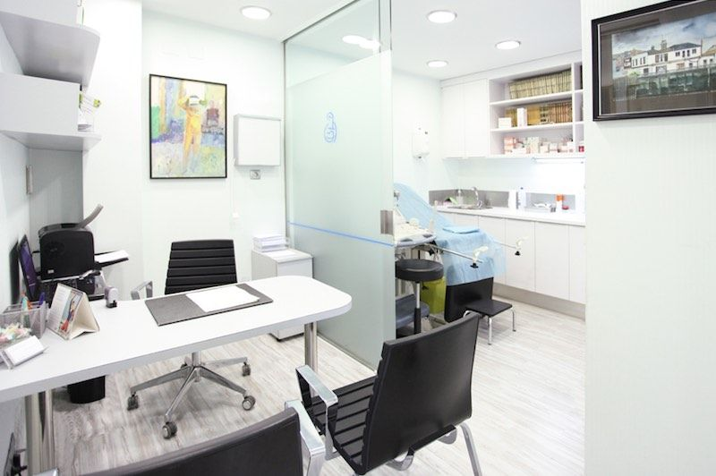

Tu bienestar, nuestra prioridad
Te damos la más cordial bienvenida a la Clínica Ginecológica PussyTays, un espacio creado especialmente para ti, donde la salud femenina es nuestra mayor prioridad. Aquí encontrarás un ambiente de respeto, profesionalismo y atención cálida para cuidar de ti en cada etapa de tu vida.
Somos un equipo de profesionales dedicadas a brindar atención médica especializada en ginecología y salud femenina. Nuestro compromiso es ofrecer un servicio integral, seguro y confidencial, con tecnología moderna y un enfoque humano. Trabajamos para acompañarte en tu bienestar físico, emocional y reproductivo.
Agenda tu cita: